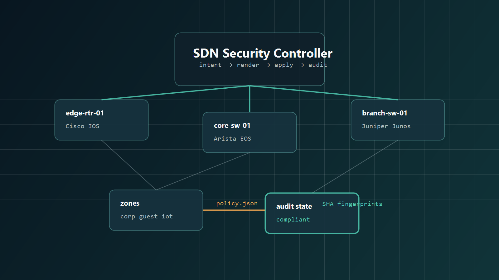

Management Plane
SSH-only access, VTY restrictions, login banner, NTP, syslog, and SNMP contact baseline.
Python · SDN · Network Security Automation
A controller-style project that turns centralized security intent into device-specific configurations for switches and routers.
Why it matters
The prototype models a practical NetDevOps workflow: define policy once, compile vendor-aware command sets, apply them through a controller layer, and audit whether the intended baseline still matches device state.
Architecture
The sample topology spans Cisco IOS, Arista EOS, and Juniper Junos. Each device receives the same security intent in the syntax it expects.

Capabilities
SSH-only access, VTY restrictions, login banner, NTP, syslog, and SNMP contact baseline.
Named zones compile into VLANs, router subinterfaces, and zone-specific ACL attachment.
Access VLAN assignment, PortFast, BPDU guard, MAC limits, and port-security violation handling.
Rendered command fingerprints are compared with applied state to detect missing devices or drift.
CLI Demo
The project ships with a sample campus inventory and a zero-trust policy file, so the workflow is easy to run locally.
python -m sdnsec.cli plan
python -m sdnsec.cli apply
python -m sdnsec.cli audit
edge-rtr-01: compliant - Policy zero-trust-campus-baseline is applied.
core-sw-01: compliant - Policy zero-trust-campus-baseline is applied.
branch-sw-01: compliant - Policy zero-trust-campus-baseline is applied.Open Source
Review the controller, renderers, sample inventory, policy model, and unit tests in the repository.